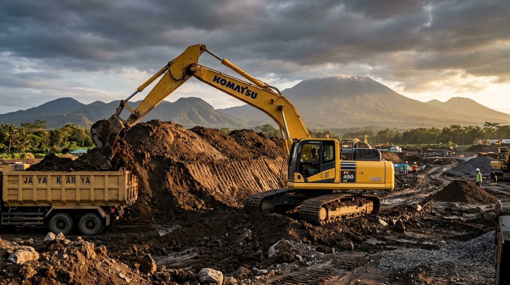
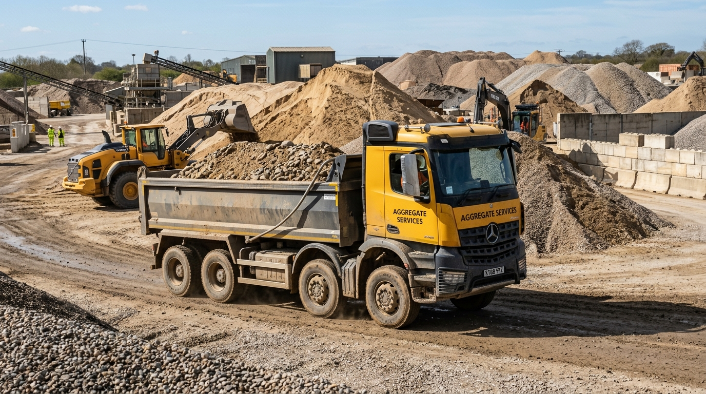
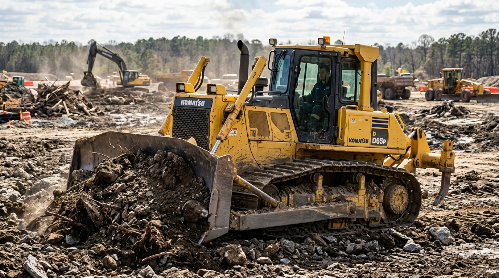

PT. SURYA BERKAH SEJAGAD menyediakan armada alat berat tangguh siap kerja (Excavator, Bulldozer, Dump Truck) serta pasokan pasir, batu, dan tanah urug berkualitas tinggi untuk kawasan Magetan dan seluruh Jawa Timur.


Kami merupakan perusahaan penyedia jasa penyewaan alat berat serta supplier bahan material bangunan alami terpercaya yang berbasis di Kabupaten Magetan, Jawa Timur.
Dengan komitmen penuh terhadap kepuasan pelanggan, kelancaran proyek, dan ketepatan waktu pengiriman material, PT. SURYA BERKAH SEJAGAD siap mendukung berbagai skala proyek konstruksi, pematangan lahan, pengurugan, hingga pembangunan infrastruktur.
Menyediakan Pasir berkualitas, Batu fondasi/split, dan Tanah Urug pilihan.
Performa mesin prima dengan pemeliharaan rutin untuk meminimalkan kendala di lapangan.
Harga bersaing, estimasi jelas, dan sistem kerja efisien bersama operator berpengalaman.
Dukungan komprehensif untuk setiap tahapan proyek pengerukan, pengurugan, hingga suplai material alami.
Pembersihan lahan dari semak, pohon, dan puing serta perataan kontur tanah kasar menggunakan Bulldozer & Excavator siap kerja.
Penggalian tanah presisi untuk pondasi gedung, jalan, parit drainase, dan waduk dengan operator terampil dan efisien.
Layanan suplai tanah urug super padat & sirtu lengkap dengan armada Dump Truck dan alat pemadat tanah (compactor).
Penyediaan dan pengiriman Pasir Progo/Pasang, Batu Kali Belah, dan Batu Split secara kontinyu dengan kapasitas besar.
Penyiapan lapisan perkerasan jalan raya, jalan perumahan, dan area parkir industri dengan standar kekerasan tinggi.
Perencanaan kebutuhan alat berat dan estimasi ritase pengiriman material untuk efisiensi biaya proyek Anda.
Unit alat berat dalam kondisi prima, fleksibel untuk sewa harian, mingguan, maupun bulanan.
Sangat efektif untuk pengerukan, penggalian parit, pematangan lahan, dan perataan tanah skala sedang hingga besar.
Angkutan cepat dan berkapasitas besar untuk material konstruksi, pasir, batu, serta pembuangan puing/tanah.

Handal dalam pembukaan lahan (land clearing), mendorong material, dan pembentukan kontur tanah kasar.
"Menerima pemesanan bahan material bangunan alami: Pasir, Batu, dan Tanah Urug."
Pasir alami kualitas unggul, kadar lumpur rendah, ideal untuk adukan cor, pasangan bata, plesteran, dan pekerjaan pondasi.
Menyediakan batu pondasi utuh, batu kali belah, serta batu pecah (split) berbagai ukuran untuk campuran beton presisi.
Tanah urugan super padat & sirtu (pasir batu) untuk pengurugan lahan perkantoran, perumahan, peninggian jalan, dan lapis pondasi.
Beberapa hasil dokumentasi pengerjaan proyek sewa alat berat dan suplai material di wilayah Jawa Timur.
Pekerjaan pembersihan lahan dan perataan tanah seluas 2,5 Hektar menggunakan kombinasi Excavator PC200 & Bulldozer D65.
Pengiriman dan perataan 350 Ret tanah urug super dan sirtu untuk peninggian akses jalan desa dan kawasan industri perkebunan.
Suplai kontinyu batu kali belah dan pasir alami berkualitas tinggi untuk proyek konstruksi pondasi gedung dan perumahan.
Hitung perkiraan kebutuhan sewa alat berat atau pengiriman material bangunan Anda dengan mudah.
"Pelayanan suplai tanah urug dan pasir progo sangat cepat & profesional. Armada dump truck lengkap, pengiriman selalu tepat waktu ke lokasi proyek kami di Temboro."
"Sewa excavator untuk pematangan lahan di Magetan, unit sangat sehat dan operator berpengalaman. Kerjaan selesai lebih cepat dari target."
"Pesan pasir dan batu kali untuk pondasi rumah. Kualitas pasir super bersih, volume muatan jujur dan harga bersaing di Karas Magetan."
Kami siap melayani kebutuhan material & rental alat berat Anda. Silakan hubungi kami atau kunjungi kantor operasional kami di Magetan.
PT. SURYA BERKAH SEJAGAD
Balibatur, RT.7/RW.3, Pakis, Temboro, Kec. Karas, Kabupaten Magetan, Jawa Timur 63395
Buka Senin pukul 07.00 WIB
Buka Senin Pukul 07.00
Jawa Timur